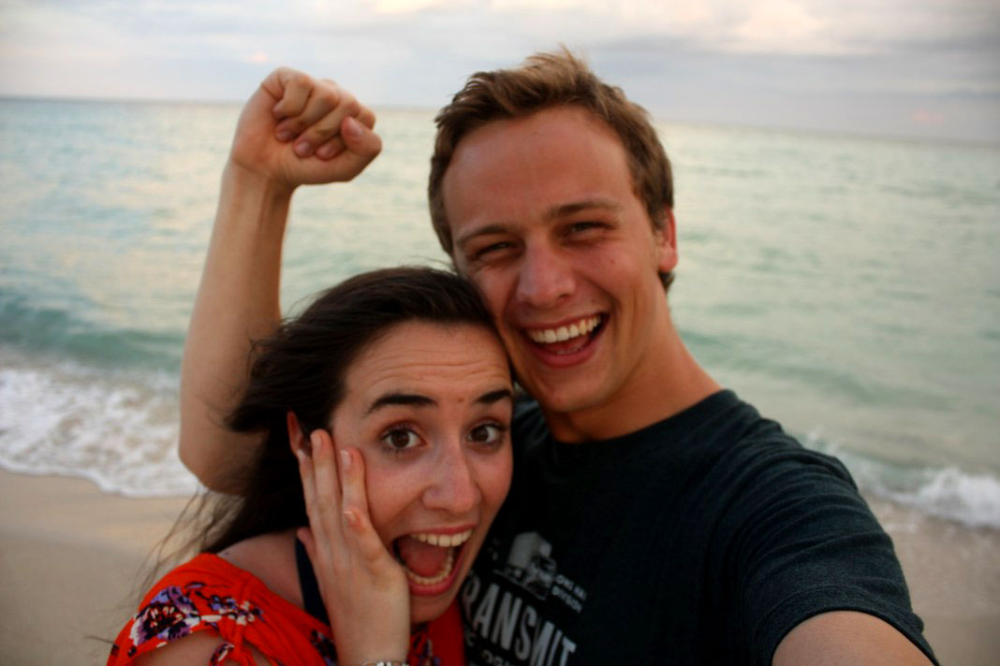
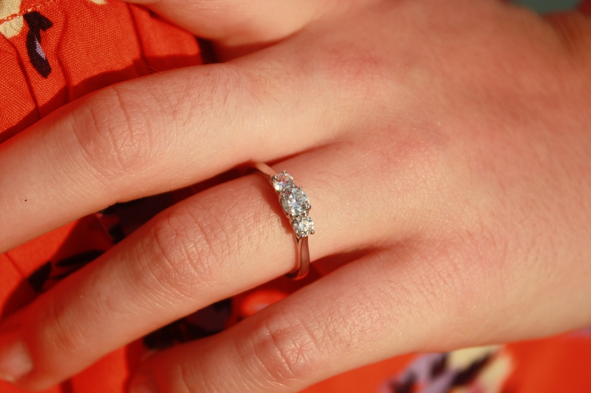

Our Story - The Proposal
{kind=link}
Have you ever had a moment where time seems to move in slow motion? Well, that is my memory of the evening Graham proposed.
It was a grey morning in North Beach, Miami, the first grey morning we had woken up to. I arose from a deep sleep wondering what to do for our special day - our four year anniversary. As I lay in bed reminiscing over the previous days we had enjoyed in Miami Graham arrived and instructed me to close my eyes. I diligently obliged and listened to the rustling and bustling coming from the kitchen. To my delight Graham served up homemade pancakes and freshly brewed coffee for a special anniversary breakfast. The surprises continued with cards and presents making for an already memorable day.
We decided to spend the afternoon at the Seaquarium so we caught the bus and enjoyed a fun-filled day watching dolphin shows, admiring beautiful tanks of tropical fish and learning about sharks! That evening we enjoyed a delicious Mexican dinner and asked our very obliging waitress to take our picture. We're never a couple to refuse a photo opportunity!
Darkness had fallen as we meandered our way back to the apartment and Graham suggested we walk home along the beach. The sky was a carpet of dark velvet with the stars like sparkling sequins. A full moon reflected in the glittering ocean as we listened to the waves lapping in and out on the shore. We walked along hand in hand, quiet and content in each other’s company.
{kind=link}
A few minutes later we stopped walking and Graham turned to me holding both my hands in his. He seemed nervous and instantly I began to feel nervous too. It was then that time seemed to stop. On a moonlit beach in Miami Graham got down on one knee and produced a sparkling diamond from his pocket. I don’t recall what he said. I gasped, I laughed, I cried but most importantly and without any hesitation, I said yes. It was the happiest moment of my life.
- Cathriona